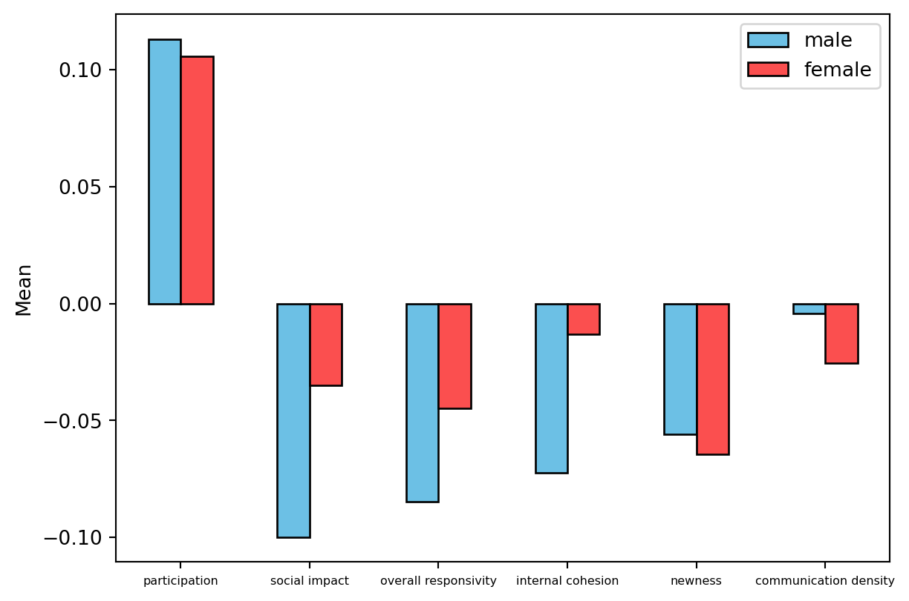
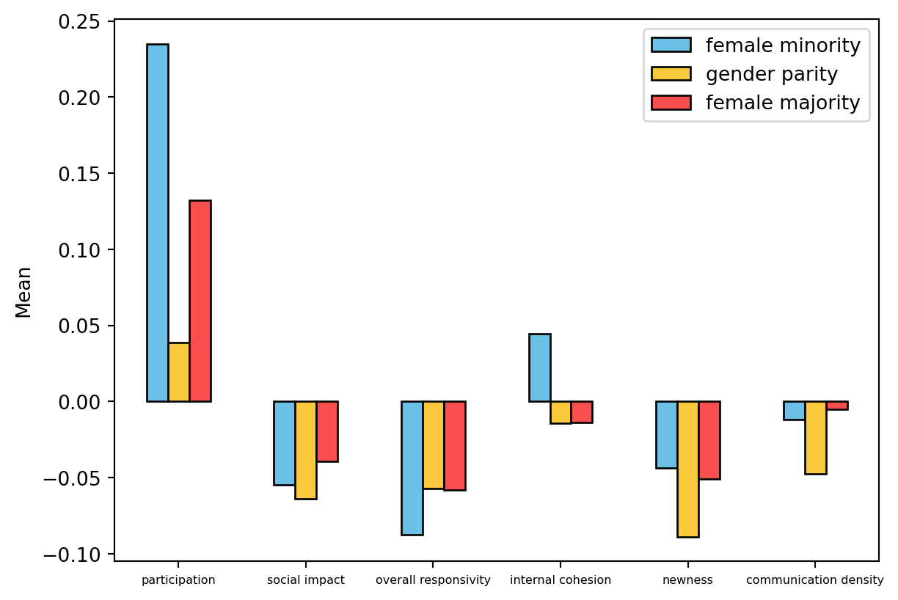
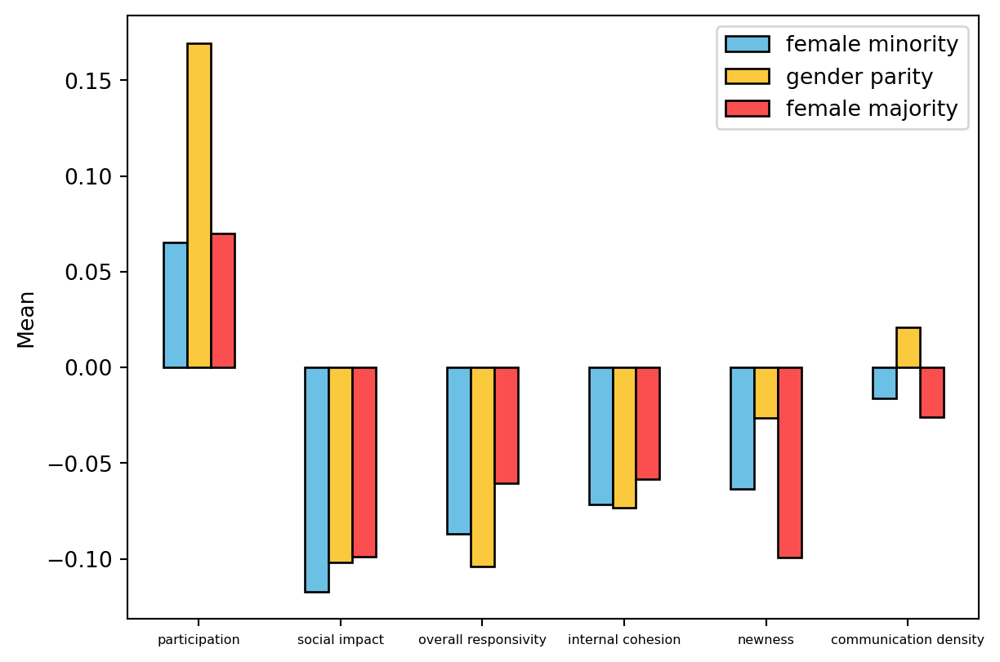

import numpy as np
import pandas as pd
import matplotlib.pyplot as plt
import seaborn as sns
import scipyExamining the Relationship between Gender Composition and Group Communication in Online Team Learning Environments
Research Goal
The goal of the research is to investigate how communication dynamics among individuals in group interactions are influenced by group composition and gender.
Research Questions & Variables
RQ1: How do communication dynamics differ between males and females in online environments?
Sex, z.participation, z.social.impact, z.overall.responsivity, z.internal.cohesion, z.newness, and z.comm.density
RQ2: How do sociocognitive communications change for males and females across gender group composition?
Sex, chat_room_id, z.participation, z.social.impact, z.overall.responsivity, z.internal.cohesion, z.newness, and z.comm.density
Load Modules
Load SMOC Data
df = pd.read_csv('/Users/jennytran/Documents/GitHub/smoc-project/data/SMOCDemoGCA.xlsx - SMOCDemoGCA.csv')Data Selection
Select variables that I’m interested in exploring, remove empty rows, and filtering for individuals who were in groups of 4.
df = df[['person_id','chat_room_id','z.participation',
'z.social.impact',
'z.overall.responsivity',
'z.internal.cohesion',
'z.newness',
'z.comm.density', 'Sex']]
df = df.dropna().reset_index(drop=True)
df = df[df.groupby('chat_room_id')['chat_room_id'].transform('size') == 4].reset_index(drop=True)Sample Descriptives
Group Descriptives (Frequency)
len(df)3040Gender Descriptives (Frequency)
In the dataset, males are represented by 1.0 and females are represented by 2.0.
male = df[df['Sex'] == 1]
female = df[df['Sex'] == 2]
print('male:', len(male['person_id'].unique()))
print('female:', len(female['person_id'].unique()))male: 554
female: 847Results
RQ1: How do communication dynamics differ between males and females in online environments?
num = [1.0, 2.0]
z_par = []
z_soc = []
z_overesp = []
z_internal = []
z_new = []
z_dens = []
for n in num:
y = df.loc[df['Sex'] == n]
z_par.append(sum(y['z.participation']) / len(y))
z_soc.append(sum(y['z.social.impact']) / len(y))
z_overesp.append(sum(y['z.overall.responsivity']) / len(y))
z_internal.append(sum(y['z.internal.cohesion']) / len(y))
z_new.append(sum(y['z.newness']) / len(y))
z_dens.append(sum(y['z.comm.density']) / len(y))
plotdata = pd.DataFrame({
"participation":z_par,
"social impact":z_soc,
"overall responsivity":z_overesp,
"internal cohesion":z_internal,
"newness":z_new,
"communication density":z_dens
},
index=['male', 'female']
)
plotdata = plotdata + .15
plotdata = plotdata.transpose()
code = ['#6cc0e5', '#fb4f4f']
plotdata.plot(kind="bar", color = code, edgecolor = 'black')
plt.ylabel("Mean")
plt.xticks(rotation=0, fontsize = 6)
plt.legend()
plt.savefig('/Users/jennytran/Documents/GitHub/smoc-project/outputs/gca_gender.png')
plt.show()
RQ2: How do sociocognitive communications change for males and females across gender group composition?
sex_lst = []
num_females = []
for n in df['chat_room_id']:
a = df[df['chat_room_id'] == n]
temp_sex = []
for i in a['Sex']:
temp_sex.append(i)
sex_lst.append(temp_sex)
for n in sex_lst:
num_females.append(n.count(2))
df['Number of Females'] = num_femalesMean measure for female students across the group composition
df_fem = df.loc[df['Sex']==2]
df_fem = df_fem.drop(df_fem.loc[df_fem['Number of Females']==4].index)
df_fem.reset_index(drop = True)
num = [1,2,3]
z_par = []
z_soc = []
z_overesp = []
z_internal = []
z_new = []
z_dens = []
for n in num:
y = df_fem.loc[df_fem['Number of Females'] == n]
z_par.append(sum(y['z.participation']) / len(y))
z_soc.append(sum(y['z.social.impact']) / len(y))
z_overesp.append(sum(y['z.overall.responsivity']) / len(y))
z_internal.append(sum(y['z.internal.cohesion']) / len(y))
z_new.append(sum(y['z.newness']) / len(y))
z_dens.append(sum(y['z.comm.density']) / len(y))
plotdata = pd.DataFrame({
"participation":z_par,
"social impact":z_soc,
"overall responsivity":z_overesp,
"internal cohesion":z_internal,
"newness":z_new,
"communication density":z_dens
},
index=['female minority', 'gender parity', 'female majority']
)
plotdata = plotdata + .15
plotdata = plotdata.transpose()
CB_color_cycle = ['#6cc0e5', '#fbc93d', '#fb4f4f']
plotdata.plot(kind="bar", color = CB_color_cycle, edgecolor = 'black')
plt.ylabel("Mean")
plt.xticks(rotation=0, fontsize = 6)
plt.legend()
plt.savefig('/Users/jennytran/Documents/GitHub/smoc-project/outputs/gca_females.png')
plt.show()
Mean measure for male students across the group composition
df_male = df.loc[df['Sex']==1]
df_male = df_male.drop(df_male.loc[df_male['Number of Females']==0].index)
df_male.reset_index(drop = True)
num = [1,2,3]
z_par = []
z_soc = []
z_overesp = []
z_internal = []
z_new = []
z_dens = []
for n in num:
y = df_male.loc[df_male['Number of Females'] == n]
z_par.append(sum(y['z.participation']) / len(y))
z_soc.append(sum(y['z.social.impact']) / len(y))
z_overesp.append(sum(y['z.overall.responsivity']) / len(y))
z_internal.append(sum(y['z.internal.cohesion']) / len(y))
z_new.append(sum(y['z.newness']) / len(y))
z_dens.append(sum(y['z.comm.density']) / len(y))
plotdata = pd.DataFrame({
"participation":z_par,
"social impact":z_soc,
"overall responsivity":z_overesp,
"internal cohesion":z_internal,
"newness":z_new,
"communication density":z_dens
},
index=['female minority', 'gender parity', 'female majority']
)
plotdata = plotdata + .15
plotdata = plotdata.transpose()
plotdata.plot(kind="bar", color = CB_color_cycle, edgecolor = 'black')
plt.ylabel("Mean")
plt.xticks(rotation=0, fontsize = 6)
plt.legend()
plt.savefig('/Users/jennytran/Documents/GitHub/smoc-project/outputs/gca_males.png')
plt.show()
T-test comparing means of females and males GCA scores
cols = ["participation", "social impact", "overall responsivity", "internal cohesion", "newness", "communication density"]
t_test_all = []
t_test_all.append(list(scipy.stats.ttest_ind(df_fem['z.participation'], df_male['z.participation'])))
t_test_all.append(list(scipy.stats.ttest_ind(df_fem['z.social.impact'], df_male['z.social.impact'])))
t_test_all.append(list(scipy.stats.ttest_ind(df_fem['z.overall.responsivity'], df_male['z.overall.responsivity'])))
t_test_all.append(list(scipy.stats.ttest_ind(df_fem['z.internal.cohesion'], df_male['z.internal.cohesion'])))
t_test_all.append(list(scipy.stats.ttest_ind(df_fem['z.newness'], df_male['z.newness'])))
t_test_all.append(list(scipy.stats.ttest_ind(df_fem['z.comm.density'], df_male['z.comm.density'])))
df_ttest_all = pd.DataFrame(t_test_all, columns = ['f-statistic', 'p-value'])
df_ttest_all.insert(loc = 0, column = 'GCA dimensions', value = cols)
df_ttest_all| GCA dimensions | f-statistic | p-value | |
|---|---|---|---|
| 0 | participation | -0.187156 | 0.851553 |
| 1 | social impact | 2.799577 | 0.005156 |
| 2 | overall responsivity | 1.498556 | 0.134113 |
| 3 | internal cohesion | 2.636932 | 0.008417 |
| 4 | newness | -0.612535 | 0.540239 |
| 5 | communication density | -1.550005 | 0.121265 |
ANOVA comparing mean GCA scores for males across group dimensions
anova_male = []
f_min = df_male.loc[df_male['Number of Females'] == 1]
g_par = df_male.loc[df_male['Number of Females'] == 2]
f_maj = df_male.loc[df_male['Number of Females'] == 3]
anova_male.append(list(scipy.stats.f_oneway(f_min['z.participation'], g_par['z.participation'], f_maj['z.participation'])))
anova_male.append(list(scipy.stats.f_oneway(f_min['z.social.impact'], g_par['z.social.impact'], f_maj['z.social.impact'])))
anova_male.append(list(scipy.stats.f_oneway(f_min['z.overall.responsivity'], g_par['z.overall.responsivity'], f_maj['z.overall.responsivity'])))
anova_male.append(list(scipy.stats.f_oneway(f_min['z.internal.cohesion'], g_par['z.internal.cohesion'], f_maj['z.internal.cohesion'])))
anova_male.append(list(scipy.stats.f_oneway(f_min['z.newness'], g_par['z.newness'], f_maj['z.newness'])))
anova_male.append(list(scipy.stats.f_oneway(f_min['z.comm.density'], g_par['z.comm.density'], f_maj['z.comm.density'])))
df_anova_male = pd.DataFrame(anova_male, columns = ['f-statistic', 'p-value'])
df_anova_male.insert(loc = 0, column = 'GCA dimensions', value = cols)
df_anova_male| GCA dimensions | f-statistic | p-value | |
|---|---|---|---|
| 0 | participation | 3.454696 | 0.031941 |
| 1 | social impact | 0.128036 | 0.879835 |
| 2 | overall responsivity | 0.759967 | 0.467928 |
| 3 | internal cohesion | 0.071065 | 0.931406 |
| 4 | newness | 5.976840 | 0.002620 |
| 5 | communication density | 2.899576 | 0.055468 |
ANOVA comparing mean GCA scores for females across group dimensions
anova_fem = []
f_min = df_fem.loc[df_fem['Number of Females'] == 1]
g_par = df_fem.loc[df_fem['Number of Females'] == 2]
f_maj = df_fem.loc[df_fem['Number of Females'] == 3]
anova_fem.append(list(scipy.stats.f_oneway(f_min['z.participation'], g_par['z.participation'], f_maj['z.participation'])))
anova_fem.append(list(scipy.stats.f_oneway(f_min['z.social.impact'], g_par['z.social.impact'], f_maj['z.social.impact'])))
anova_fem.append(list(scipy.stats.f_oneway(f_min['z.overall.responsivity'], g_par['z.overall.responsivity'], f_maj['z.overall.responsivity'])))
anova_fem.append(list(scipy.stats.f_oneway(f_min['z.internal.cohesion'], g_par['z.internal.cohesion'], f_maj['z.internal.cohesion'])))
anova_fem.append(list(scipy.stats.f_oneway(f_min['z.newness'], g_par['z.newness'], f_maj['z.newness'])))
anova_fem.append(list(scipy.stats.f_oneway(f_min['z.comm.density'], g_par['z.comm.density'], f_maj['z.comm.density'])))
df_anova_fem = pd.DataFrame(anova_fem, columns = ['f-statistic', 'p-value'])
df_anova_fem.insert(loc = 0, column = 'GCA dimensions', value = cols)
df_anova_fem| GCA dimensions | f-statistic | p-value | |
|---|---|---|---|
| 0 | participation | 5.723567 | 0.003343 |
| 1 | social impact | 0.360032 | 0.697717 |
| 2 | overall responsivity | 0.214722 | 0.806791 |
| 3 | internal cohesion | 0.545536 | 0.579651 |
| 4 | newness | 3.054174 | 0.047467 |
| 5 | communication density | 3.509576 | 0.030166 |